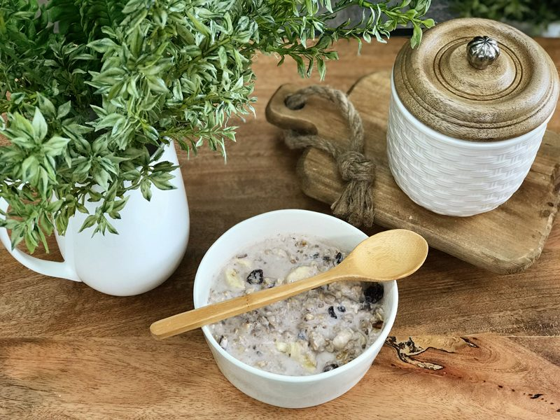
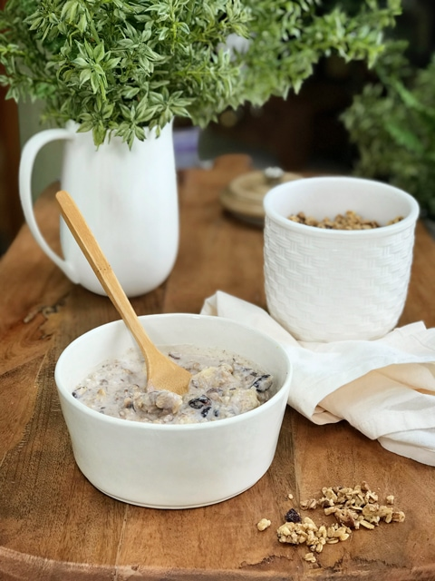

Cardamom, Maple and Black Pepper Granola
 raw / vegan / gluten-free
raw / vegan / gluten-free
Black Pepper, lately I have been on a black pepper kick. Not sure why, but I do enjoy the kick that lingers from it when it is paired with something sweet. I often laugh at myself when I think back to a childhood memory I have that involves black pepper.
To be honest, I am surprised that I am even willing to share it, but here it goes. Goodness, I must have been 6 or 7 years old, and my mother and I were driving down the highway. I believe we were traveling from North Dakota to South Dakota.
Back in those days, kids didn’t wear seat belts… shoot I don’t think anyone did. Seat belts were just those things that occasionally got caught in the door, or they would tangle you up as you tried to crawl into the back seat. Right? Well, anyway, as we were traveling along the highway I was sitting on the floorboard with my tablet of plain paper and crayons, perched on the seat which was acting as my design table. I was already a designer way back then.
I remember drawing, coloring, stopping for sodas at the truck stops, stopping to tinkle 2 miles down at the road truck stops, stopping for sodas at the truck stops, stopping to tinkle 2 miles down the road at truck stops, stopping for sodas at the truck stops. Oh, I said that already? I meant to! That was the pattern. Haha, One-stop involved a special treat at McDonald’s! We pulled out the drive-through, and after I got my Happy Meal, I nestled back down on the floorboard to spread my lunch out on the seat next to mom as she drove.

Towards the end of my meal, underneath the last of the fries that had fallen to the bottom of the bag, I discovered little packets of salt and pepper. Ohhh mini packets! I loved and still do love small trial sized stuff. I played with them until one of the peppers broke open. Hmm, what to do with this open packet of black pepper?
Well, I did what most demented children would do, I sniffed it!!! Aaaah-chooo! I sniffed again, Aaaah-chooo! I sniffed again, Aaaah-chooo! I sniffed again; I was having way too much fun. I suppose it was a good thing that there was ONLY one packet in the bag otherwise I might have become a black pepper crack sniffing addict. Lol, That memory has haunted stuck with me all these years. Ok, enough of memory lane, let’s get busy and make this granola! I hope you enjoy it, please let me know either way.

Ingredients:
Yields roughly 6-8 cups
- 4 cups gluten-free, rolled oats, soaked
- 2 cups coarsely chopped raw walnuts, soaked
- 2 Tbsp cold-pressed coconut oil, melted
- 1/3 cup + 2 Tbsp maple syrup
- 1 tsp maple extract
- 1 tsp Himalayan pink salt
- 1/2 tsp ground cardamom
- 1/4 tsp ground Ceylon cinnamon
- 1/4 tsp ground ginger or ginger juice
- 1/4 tsp freshly cracked black pepper
Preparation:
- Soak, drain, and rinse the oats and walnuts. You want to keep rinsing until the drain water is clear.
- In a large bowl mix oats, walnuts, coconut oil, agave, maple syrup, maple extract, salt, cardamom, cinnamon, ginger, and pepper.
- Use your hands to mix this up… get everything well coated. Besides, it’s fun! Just be sure to remove rings. I had to fish mine out.
- Place granola on the teflex sheet that comes with your dehydrator.
- If you don’t have teflex sheets, use parchment paper (don’t use wax paper as it will stick).
- I used 2 trays, placing 3 1/2 cups of granola batter per sheet.
- Dry at 145 degrees (F) for 1 hour, then reduce to 115 degrees (F) for 4 hours. Flip the batter over onto the mesh sheet and peel the teflex sheet off and continue drying for 4-6 hours or until dry.
- Allow to cool for a few minutes and break into chunks, ENJOY.
- I topped the granola with dried banana chips and raisins.
- Store in an airtight container for several weeks on the counter or in the freezer for 1-3 months.
The Institute of Culinary Ingredients:
- To learn more about maple syrup by clicking (here).
- Why do I specify Ceylon cinnamon? Click (here) to learn why.
- What is Himalayan pink salt and does it really matter? Click (here) to read more about it.
- Are oats gluten-free? Yes, read more about that (here).
- Are oats raw? Yes, they can be found. Click (here) to learn more.
- Do I need to soak and dehydrate oats? Not required but recommended. Click (here) to see why.
Culinary Explanations:
- Why do I start the dehydrator at 145 degrees (F)? Click (here) to learn the reason behind this.
- When working with fresh ingredients, it is important to taste test as you build a recipe. Learn why (here).
- Don’t own a dehydrator? Learn how to use your oven (here). I do however truly believe that it is a worthwhile investment. Click (here) to learn what I use.
© AmieSue.com